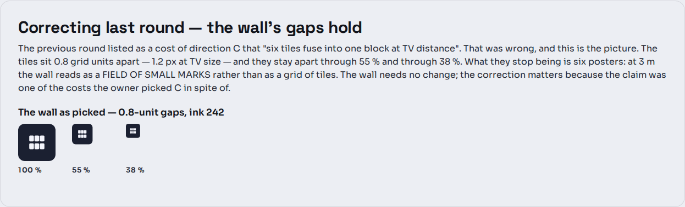
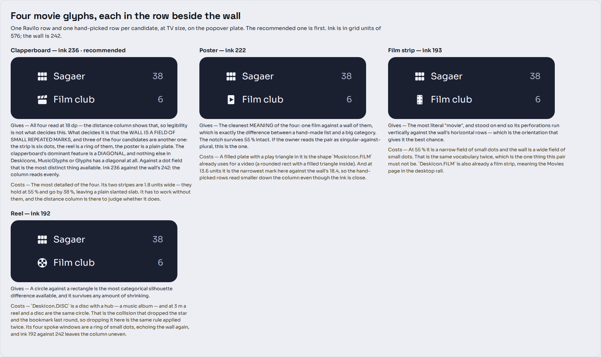
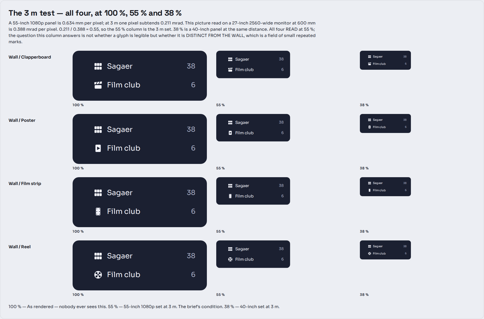
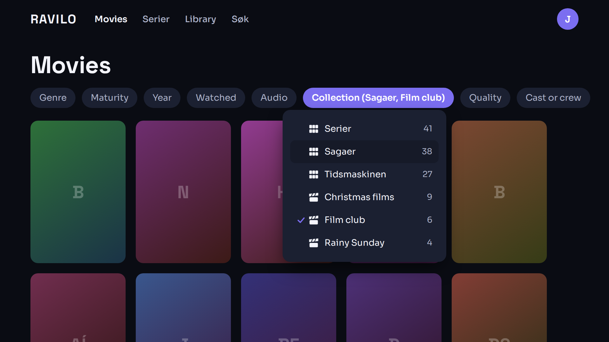
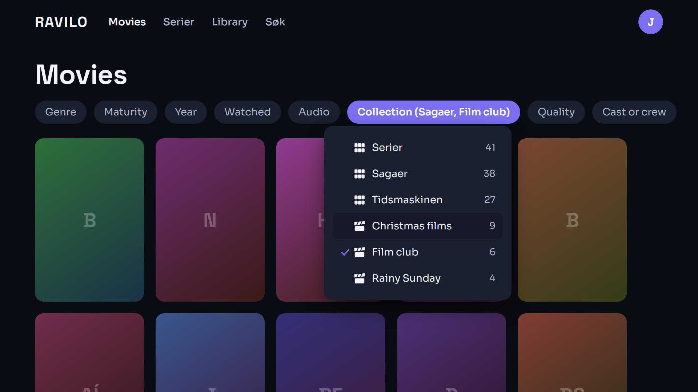
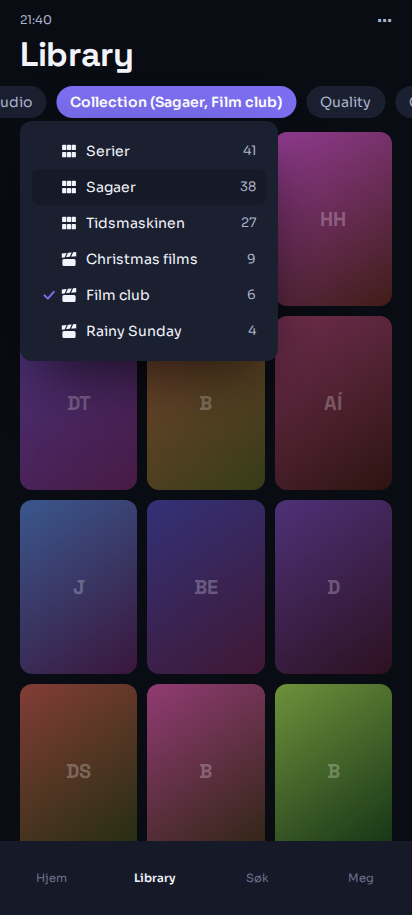
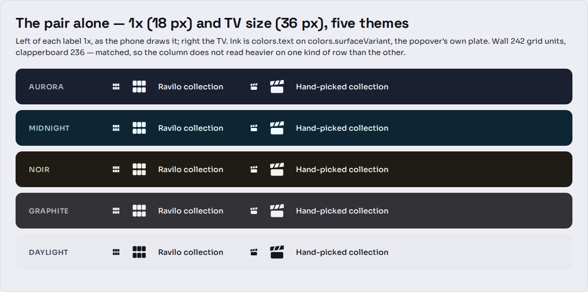

A follow-up to the first round. The Ravilo collection glyph is decided; this draws the other one. Four candidates, one recommended. Drawn 2026-11-09.
colors.text resting and focused, with the row's plate as the whole
focus cue. Row height, focus ring and the popover's size rules untouched, and
CHANNEL still needs the 28 dp width allowance AUDIO already takes.
The wall as picked, at the three distances. The gaps hold.
What the wall does stop being at 3 m is six posters. It becomes a field of small repeated marks — legible, but as a texture rather than as a grid of tiles. That is the fact the movie glyph has to be designed against, and it is a different fact from the one I reported.

Each candidate in the row it lives in, beside the wall, at TV size. Ink is the filled area in grid units of 576; the wall is 242.
A solid body under a slanted clapper bar, with a wedge of background widening between them. The
bar is three filled parallelograms, not a bar with two holes — no even-odd, no coincident edges, and
the Compose port is three Paths. Ink 236.
Gives. All four candidates read at 18 dp — the distance column shows that, so
legibility is not what decides this. What decides it is that the wall is a field of small
repeated marks, and three of the four are another one: the strip is six dots, the reel is a ring of
them, the poster is a plain plate. The clapperboard's dominant feature is a diagonal, and
nothing else in DeskIcons, MusicGlyphs or Glyphs has a diagonal
at all. Against a dot field that is the most distinct thing available. 236 against 242 also
means the column does not read heavier on one kind of row than the other.
Costs. The most detailed of the four. Its two stripes are 1.8 units wide — they hold at 55 % and go by 38 %, leaving a plain slanted slab. It has to work without them.
One filled plate with a play notch cut out of it. Ink 222.
Gives. The cleanest meaning of the four: one film against a wall of them, which is exactly the difference between a hand-made list and a big category. The notch survives 55 % intact. If the pair is meant to read as singular-against-plural, this is the one — and that reading is a fair one to have of the owner's own words.
Costs. A filled plate with a play triangle in it is the shape
MusicIcon.FILM already uses for a video. And at 13.6 units it is the narrowest mark here
against the wall's 18.4, so the hand-picked rows read smaller down the column even though the ink is
close.
Stood on end, so its perforations run vertically against the wall's horizontal rows. Ink 193.
Costs. At 55 % it is a narrow field of small dots and the wall is a wide field of
small dots — the same vocabulary twice, which is the one thing this pair must not be. And
DeskIcon.FILM is already a film strip, meaning the Movies page in the desktop rail.
A disc with a hub and four spoke windows. Ink 192.
Costs. DeskIcon.DISC is a disc with a hub — a music album — and at
3 m a reel and a disc are the same circle. That is the collision that dropped the star and the
bookmark last round. Its four spoke windows are a ring of small dots, echoing the wall again, and
192 against 242 leaves the column uneven.
Same arithmetic as the first round, restated so this one stands alone. A 55-inch 16:9 panel is 1218 mm wide; at 1920 px that is 0.634 mm per pixel, and at 3 m one pixel subtends 0.211 mrad. A 27-inch 2560-wide monitor at 600 mm is 0.388 mrad. 0.211 / 0.388 = 0.55, so the 55 % column is the 3 m set and 38 % is a 40-inch panel at the same distance.

All four hold at 55 %. The column is not asking which is legible — it is asking which is not another field of dots.

TV 1920 × 1080, Movies, Sagaer focused and Film club ticked. Three walls, then three clapperboards: the column sorts itself.

The same popover with Christmas films focused. The glyph is the same ink in both states, so the only thing that moves is the plate.

Phone 412 dp, Library. The glyph is 18 px here; at that size the clapperboard's two stripes nearly close and it reads as a wedge on a box, which is the right trade on a screen held at arm's length.

The pair alone, 1× and TV size, in all five shipped themes. Both take
colors.text and neither needs a per-theme rule.
| The discriminator is kind, not size | All four read at 18 dp. What separates a pair at 3 m here is whether the two glyphs are the same kind of mark. The wall is a dot field; the pick must not be. |
|---|---|
| A diagonal, because the set has none | Checked against every glyph in DeskIcons.kt, MusicGlyphs.kt and
Glyphs.kt. The clapperboard's slant is unique in the system, which is exactly what
makes it cheap to recognise. |
| Three parallelograms, not a bar with holes | The first render drew a 5.0-thick bar with 2.4-wide stripes and it read as three floating chevrons: a gap near half the bar's own thickness separates rather than cuts. 5.6 thick with 1.8-wide stripes reads as one band. |
| Ink matched to the wall | 236 against 242. The first round lost direction B on exactly this (96 against 182). |
Nothing in this round touches the row, the popover, the focus ring or the strings. The two
screen-reader labels stand as drawn: browse.collection.ravilo —
Ravilo collection / Ravilo-samling / Ravilo-savn, and
browse.collection.picked — Hand-picked collection / Håndplukket samling /
Handplukkað savn. A viewer never reads the word Jellyfin.